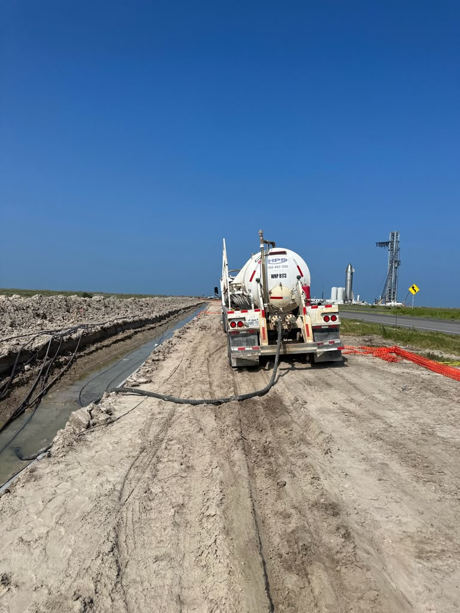
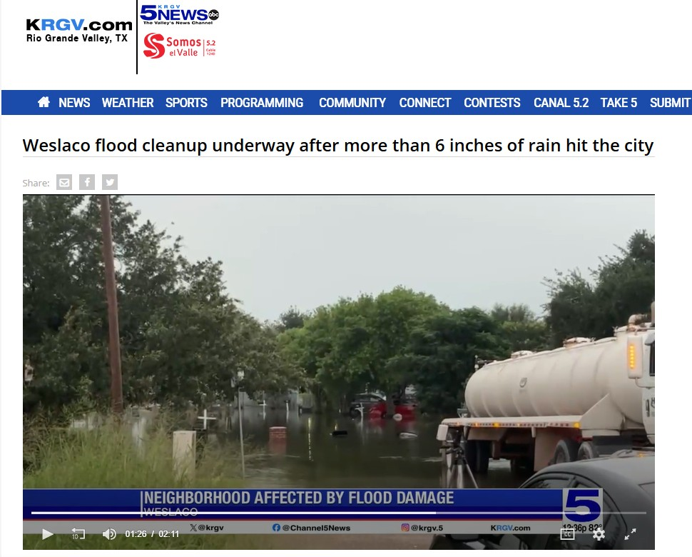

About Husky Petroleum Services LLC
A locally owned vacuum truck company built on reliability, safety, and a deep understanding of the Rio Grande Valley's oil and gas industry.
Our Story
Husky Petroleum Services LLC was founded to give operators, drilling contractors, and midstream companies in the Rio Grande Valley a vacuum truck partner they can count on. Based in Mission, TX, we understand the pace of oilfield work and the importance of showing up when it matters. Whether that's a scheduled haul or an emergency call in the middle of the night.
Our Mission
To provide fast, safe, and fully documented vacuum truck services that keep our clients' operations running and compliant. We treat every job, from routine hauling to emergency spill response, with the same level of urgency and professionalism.


Who We Serve
We proudly serve operators, drilling contractors, and midstream companies throughout the Rio Grande Valley, offering dependable support for flowback and produced water hauling, tank bottoms and sludge removal, spill response, tank cleaning, and both routine and emergency dispatch.